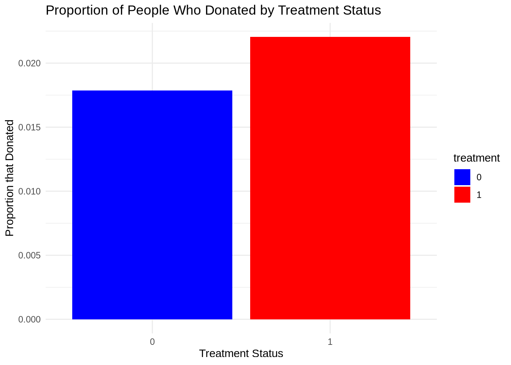
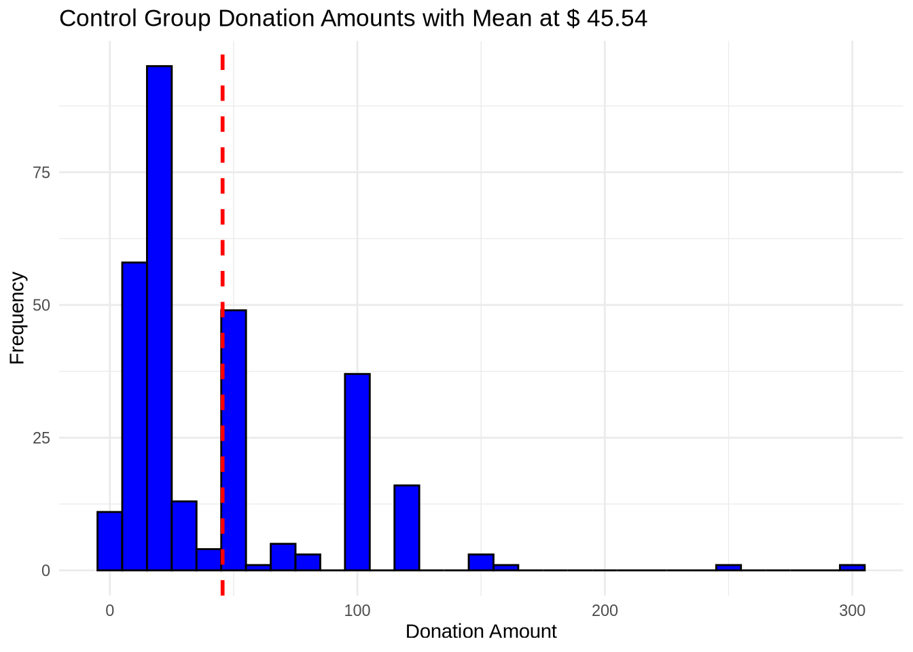
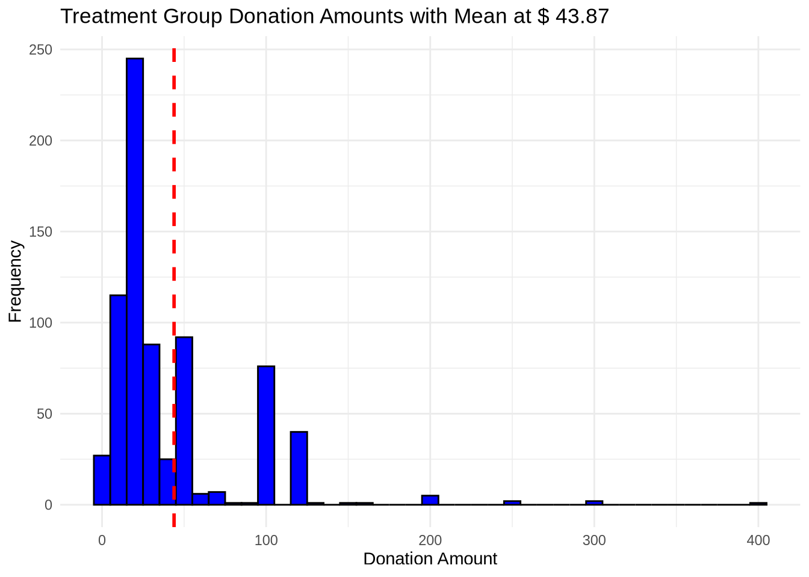
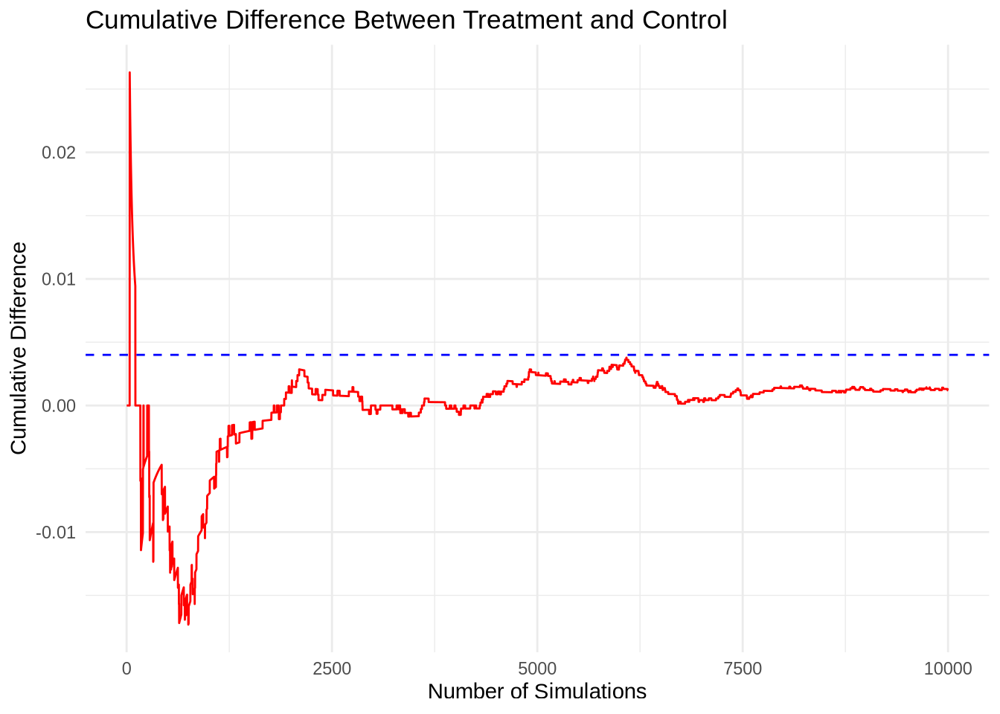

Dean Karlan at Yale and John List at the University of Chicago conducted a field experiment to test the effectiveness of different fundraising letters. They sent out 50,000 fundraising letters to potential donors, randomly assigning each letter to one of three treatments: a standard letter, a matching grant letter, or a challenge grant letter. They published the results of this experiment in the American Economic Review in 2007. The article and supporting data are available from the AEA website and from Innovations for Poverty Action as part of Harvard’s Dataverse.
The experiment tests a variety of hypotheses, including whether matching donations increases the likelihood of a donation, whether the size of the match matters, and whether the size of the donation is affected by the match. To accomplish this, the authors used a variety of treatments, varying the price ratios for the match, the maximum matching grant amount, and the individual-specific ask amount. The treatments were letters used to solicit donations for a liberal politically motivated group that were sent to all 50 states. To control for spatial heterogeneity, the authors made sure that the treatment and control groups were balanced across states using demographic data, state and county election data, and data on the organization’s activity level within each state. Ultimately, the authors find that matching donations increases the likelihood of a donation, however, they also find that the size of the match does not matter, and that the size of the donation is not affected by the match.
This project seeks to replicate their results.
Data
Description
todo: Read the data into R/Python and describe the data The data used for this experiment has assigned roughly 2/3 of the individuals to the treatment group while assigning the remaining 1/3 of participants to be receive the standard mailing in the control group. Within the treatment group, we see that the different treatment features are evenly distributed across the treatment group participants
# read the data library(haven)data <-read_dta("/home/jovyan/My_Quarto_Website/projects/project1/karlan_list_2007.dta")# summarize treatment/control splittreatment_perc <-mean(data$treatment)control_perc <-mean(data$control)# Print the resultprint(treatment_perc)
[1] 0.6668131
print(control_perc)
[1] 0.3331869
# Create tables to show the distributions of the treatment featureslibrary(dplyr)
Attaching package: 'dplyr'
The following objects are masked from 'package:stats':
filter, lag
The following objects are masked from 'package:base':
intersect, setdiff, setequal, union
ratio_counts <- data %>%count(ratio) %>%mutate(percentage =round(n /sum(n) *100,2))size_counts <- data %>%count(size) %>%mutate(percentage =round(n /sum(n) *100,2))ask_counts <- data %>%count(ask) %>%mutate(percentage =round(n /sum(n) *100,2))# Print the resultprint(ratio_counts)
# A tibble: 4 × 3
ratio n percentage
<dbl+lbl> <int> <dbl>
1 0 [Control] 16687 33.3
2 1 11133 22.2
3 2 11134 22.2
4 3 11129 22.2
Suggested donation was highest previous contribution
askd2
Suggested donation was 1.25 x highest previous contribution
askd3
Suggested donation was 1.50 x highest previous contribution
ask1
Highest previous contribution (for suggestion)
ask2
1.25 x highest previous contribution (for suggestion)
ask3
1.50 x highest previous contribution (for suggestion)
amount
Dollars given
gave
Gave anything
amountchange
Change in amount given
hpa
Highest previous contribution
ltmedmra
Small prior donor: last gift was less than median $35
freq
Number of prior donations
years
Number of years since initial donation
year5
At least 5 years since initial donation
mrm2
Number of months since last donation
dormant
Already donated in 2005
female
Female
couple
Couple
state50one
State tag: 1 for one observation of each of 50 states; 0 otherwise
nonlit
Nonlitigation
cases
Court cases from state in 2004-5 in which organization was involved
statecnt
Percent of sample from state
stateresponse
Proportion of sample from the state who gave
stateresponset
Proportion of treated sample from the state who gave
stateresponsec
Proportion of control sample from the state who gave
stateresponsetminc
stateresponset - stateresponsec
perbush
State vote share for Bush
close25
State vote share for Bush between 47.5% and 52.5%
red0
Red state
blue0
Blue state
redcty
Red county
bluecty
Blue county
pwhite
Proportion white within zip code
pblack
Proportion black within zip code
page18_39
Proportion age 18-39 within zip code
ave_hh_sz
Average household size within zip code
median_hhincome
Median household income within zip code
powner
Proportion house owner within zip code
psch_atlstba
Proportion who finished college within zip code
pop_propurban
Proportion of population urban within zip code
Balance Test
As an ad hoc test of the randomization mechanism, I provide a series of tests that compare aspects of the treatment and control groups to assess whether they are statistically significantly different from one another.
todo: test a few variables other than the key outcome variables (for example, test months since last donation) to see if the treatment and control groups are statistically significantly different at the 95% confidence level. Do each as a t-test and separately as a linear regression, and confirm you get the exact same results from both methods. When doing a t-test, use the formula in the class slides. When doing the linear regression, regress for example mrm2 on treatment and look at the estimated coefficient on the treatment variable. It might be helpful to compare parts of your analysis to Table 1 in the paper. Be sure to comment on your results (hint: why is Table 1 included in the paper).
We test for a difference in means using both the t-test method and separately the linear regression method. In this case, we use both methods to confirm what we are seeing, however, both methods will ultimately produce the same result. Comparing the means of both the couple and pwhite variables respectively, we see that there is no statistically significant difference between the observations in the treatment and control groups. We tested this hypothesis for each variable at a 95% confidence level. These results give us the confidence to conclude that we do not have the statistical evidence to reject the null hypothesis that there is no difference in the means between the two groups.
Comparing Means for couple
#split data into treatment and controlcontrol_df <- data[data$treatment ==0, ]treatment_df <- data[data$treatment ==1, ]# create data for ttestmean_control <-mean(control_df$couple, na.rm =TRUE)sd_control <-sd(control_df$couple, na.rm =TRUE)N_control <-length(control_df$couple)mean_treatment <-mean(treatment_df$couple, na.rm =TRUE)sd_treatment <-sd(treatment_df$couple, na.rm =TRUE)N_treatment <-length(treatment_df$couple)# calculate tstatt_stat <- (mean_control - mean_treatment) /sqrt((sd_control^2/ N_control) + (sd_treatment^2/ N_treatment))print(t_stat)
Call:
lm(formula = pwhite ~ treatment, data = data)
Residuals:
Min 1Q Median 3Q Max
-0.81079 -0.06378 0.05300 0.11939 0.18070
Coefficients:
Estimate Std. Error t value Pr(>|t|)
(Intercept) 0.8202078 0.0013309 616.28 <2e-16 ***
treatment -0.0009128 0.0016292 -0.56 0.575
---
Signif. codes: 0 '***' 0.001 '**' 0.01 '*' 0.05 '.' 0.1 ' ' 1
Residual standard error: 0.1686 on 48215 degrees of freedom
(1866 observations deleted due to missingness)
Multiple R-squared: 6.51e-06, Adjusted R-squared: -1.423e-05
F-statistic: 0.3139 on 1 and 48215 DF, p-value: 0.5753
Experimental Results
Charitable Contribution Made
First, I analyze whether matched donations lead to an increased response rate of making a donation.
todo: make a barplot with two bars. Each bar is the proportion of people who donated. One bar for treatment and one bar for control.
Using a barplot to visually represen the outcome, we first observe the proportion of people who donated using one bar for treatment and one bar for control. Based on the bar plot below, there is a clear difference in the outcome: the treatement group has a higher proportion of people who donated than the control group. The barplot gives us reason to believe that the treatment may have a causal impact on the outcome of giving. Next, we test this hypothesis using statistical methods.
library(dplyr)library(ggplot2)# Calculating proportionsdonation_summary <- data %>%group_by(treatment) %>%summarise(proportion_donated =mean(gave))# Ensure 'treatment' is a factordonation_summary$treatment <-as.factor(donation_summary$treatment)# Plotting the proportionsggplot(donation_summary, aes(x = treatment, y = proportion_donated, fill = treatment)) +geom_col() +scale_fill_manual(values =c("blue", "red")) +labs(title ="Proportion of People Who Donated by Treatment Status",x ="Treatment Status",y ="Proportion that Donated") +theme_minimal()

todo: run a t-test between the treatment and control groups on the binary outcome of whether any charitable donation was made. Also run a bivariate linear regression that demonstrates the same finding. (It may help to confirm your calculations match Table 2a Panel A.) Report your statistical results and interpret them in the context of the experiment (e.g., if you found a difference with a small p-value or that was statistically significant at some threshold, what have you learned about human behavior? Use mostly English words, not numbers or stats, to explain your finding.)
We can test our hypothesis by using a t-test to compare the proportions observed between the treatment and control groups. As we have done before, we will confirm the results from our t-test using a bivariate linear regression to demonstrate the same finding.
The hypothesis we seek to test is whether or not the proportion of people who gave is the same in both the treatment and the control groups. The result from our t-test is that the treatment group is substantially different from the control group. A large t-stat(t-stat > 2) tells us that we have evidence to suggest that the groups differ and in our case, the t-stat is greater than 3. The results from our bivariate linear regression confirm this finding, adding that being in the treatment group increases the probability of making a charitable donation by 0.004 percent. The third model we use to confirm our results is a probit model. The probit model confirms wht we see in both the t-test as well as the linear regression, allowing us to conclude that we have sufficient statistical evidence to conclude that the treatment has a positive effect on the likelihood of giving.
T-test between the treatment and control groups on the binary outcome of whether any charitable donation was made.
#split data into treatment and controlcontrol_df <- data[data$treatment ==0, ]treatment_df <- data[data$treatment ==1, ]# create data for ttestmean_control <-mean(control_df$gave, na.rm =TRUE)sd_control <-sd(control_df$gave, na.rm =TRUE)N_control <-length(control_df$gave)mean_treatment <-mean(treatment_df$gave, na.rm =TRUE)sd_treatment <-sd(treatment_df$gave, na.rm =TRUE)N_treatment <-length(treatment_df$gave)# calculate tstatt_stat <- (mean_control - mean_treatment) /sqrt((sd_control^2/ N_control) + (sd_treatment^2/ N_treatment))print(t_stat)
[1] -3.209462
Bi-Variate Linear Regression for whether any charitable donation was made.
Call:
lm(formula = gave ~ treatment, data = data)
Residuals:
Min 1Q Median 3Q Max
-0.02204 -0.02204 -0.02204 -0.01786 0.98214
Coefficients:
Estimate Std. Error t value Pr(>|t|)
(Intercept) 0.017858 0.001101 16.225 < 2e-16 ***
treatment 0.004180 0.001348 3.101 0.00193 **
---
Signif. codes: 0 '***' 0.001 '**' 0.01 '*' 0.05 '.' 0.1 ' ' 1
Residual standard error: 0.1422 on 50081 degrees of freedom
Multiple R-squared: 0.000192, Adjusted R-squared: 0.0001721
F-statistic: 9.618 on 1 and 50081 DF, p-value: 0.001927
todo: run a probit regression where the outcome variable is whether any charitable donation was made and the explanatory variable is assignment to treatment or control. Confirm that your results replicate Table 3 column 1 in the paper.
# Fit the probit regression modelprobit <-glm(gave ~ treatment, data = data, family =binomial(link ="probit"))summary(probit)
Call:
glm(formula = gave ~ treatment, family = binomial(link = "probit"),
data = data)
Coefficients:
Estimate Std. Error z value Pr(>|z|)
(Intercept) -2.10014 0.02332 -90.074 < 2e-16 ***
treatment 0.08678 0.02788 3.113 0.00185 **
---
Signif. codes: 0 '***' 0.001 '**' 0.01 '*' 0.05 '.' 0.1 ' ' 1
(Dispersion parameter for binomial family taken to be 1)
Null deviance: 10071 on 50082 degrees of freedom
Residual deviance: 10061 on 50081 degrees of freedom
AIC: 10065
Number of Fisher Scoring iterations: 6
Differences between Match Rates
Next, I assess the effectiveness of different sizes of matched donations on the response rate.
We use a series of t-tests to test whether the size of the match ratio has an effect on whether people donate or not. Our results show that the match threshold does not have a statistically significant effect on whether or not people donate. Although this result goes against conventional wisdom, the finding aligns with what was observed in the study.
todo: Use a series of t-tests to test whether the size of the match ratio has an effect on whether people donate or not. For example, does the 2:1 match rate lead increase the likelihood that someone donates as compared to the 1:1 match rate? Do your results support the “figures suggest” comment the authors make on page 8?
# Perform a t-test on outcome1test12 <-t.test(gave ~ ratio, data =subset(data, ratio %in%c(1, 2)))test13 <-t.test(gave ~ ratio, data =subset(data, ratio %in%c(1, 3)))test23 <-t.test(gave ~ ratio, data =subset(data, ratio %in%c(2, 3)))# Print resultsprint(test12)
Welch Two Sample t-test
data: gave by ratio
t = -0.96505, df = 22225, p-value = 0.3345
alternative hypothesis: true difference in means between group 1 and group 2 is not equal to 0
95 percent confidence interval:
-0.005711275 0.001942773
sample estimates:
mean in group 1 mean in group 2
0.02074912 0.02263338
print(test13)
Welch Two Sample t-test
data: gave by ratio
t = -1.015, df = 22215, p-value = 0.3101
alternative hypothesis: true difference in means between group 1 and group 3 is not equal to 0
95 percent confidence interval:
-0.005816051 0.001847501
sample estimates:
mean in group 1 mean in group 3
0.02074912 0.02273340
print(test23)
Welch Two Sample t-test
data: gave by ratio
t = -0.050116, df = 22261, p-value = 0.96
alternative hypothesis: true difference in means between group 2 and group 3 is not equal to 0
95 percent confidence interval:
-0.004012044 0.003811996
sample estimates:
mean in group 2 mean in group 3
0.02263338 0.02273340
todo: Assess the same issue using a regression. Specifically, create the variable ratio1 then regress gave on ratio1, ratio2, and ratio3 (or alternatively, regress gave on the categorical variable ratio). Interpret the coefficients and their statistical precision.
To test the claim that the match threshold has no significant impact on whether or not someone decides to give, we execute a logistic regression, regressing gave on ratio1, ratio2, and ratio3. This test will tell us how each ratio effects the odds of someone giving anything. The coefficient for ratio 1 is positive but not statistically significant, meaning that the effect of the 1:1 ratio is not statistically significant from the effect observed when no match is offered. The effect of ratio’s 2 and 3 are both positive and statistically significant. Notably, their coefficients are nearly exactly the same, which shows tht the difference between a 2:1 ratio and a 3:1 ratio is essentially the same.
# Create 'ratio1' data <- data %>%mutate(ratio1 =as.integer(ratio ==1))# Fit a logistic regression modelmodel <-glm(gave ~ ratio1 + ratio2 + ratio3, family =binomial(), data = data)# Summary of the modelsummary(model)
Call:
glm(formula = gave ~ ratio1 + ratio2 + ratio3, family = binomial(),
data = data)
Coefficients:
Estimate Std. Error z value Pr(>|z|)
(Intercept) -4.00727 0.05844 -68.565 < 2e-16 ***
ratio1 0.15299 0.08852 1.728 0.08394 .
ratio2 0.24184 0.08646 2.797 0.00516 **
ratio3 0.24635 0.08637 2.852 0.00434 **
---
Signif. codes: 0 '***' 0.001 '**' 0.01 '*' 0.05 '.' 0.1 ' ' 1
(Dispersion parameter for binomial family taken to be 1)
Null deviance: 10071 on 50082 degrees of freedom
Residual deviance: 10060 on 50079 degrees of freedom
AIC: 10068
Number of Fisher Scoring iterations: 6
todo: Calculate the response rate difference between the 1:1 and 2:1 match ratios and the 2:1 and 3:1 ratios. Do this directly from the data, and do it by computing the differences in the fitted coefficients of the previous regression. what do you conclude regarding the effectiveness of different sizes of matched donations?
# create data subsetsratio1_data <- data[data$ratio ==1, ]ratio2_data <- data[data$ratio ==2, ]ratio3_data <- data[data$ratio ==3, ]# Calculate the mean of 'gave' for the subsetsratio1_rr <-mean(ratio1_data$gave, na.rm =TRUE) ratio2_rr <-mean(ratio2_data$gave, na.rm =TRUE) ratio3_rr <-mean(ratio3_data$gave, na.rm =TRUE) print(ratio1_rr)
[1] 0.02074912
print(ratio2_rr)
[1] 0.02263338
print(ratio3_rr)
[1] 0.0227334
Size of Charitable Contribution
In this subsection, I analyze the effect of the size of matched donation on the size of the charitable contribution.
todo: Calculate a t-test or run a bivariate linear regression of the donation amount on the treatment status. What do we learn from doing this analysis? To measure the effect we run a bivariate linear regression of the donation amount on the treatment status. In the summary of this regression, we see that being in the treatment group has a positive effect on the size of the matched donation that is statistically significant at the 90 percent level.
Call:
lm(formula = amount ~ treatment, data = data)
Residuals:
Min 1Q Median 3Q Max
-0.97 -0.97 -0.97 -0.81 399.03
Coefficients:
Estimate Std. Error t value Pr(>|t|)
(Intercept) 0.81327 0.06742 12.063 <2e-16 ***
treatment 0.15361 0.08256 1.861 0.0628 .
---
Signif. codes: 0 '***' 0.001 '**' 0.01 '*' 0.05 '.' 0.1 ' ' 1
Residual standard error: 8.709 on 50081 degrees of freedom
Multiple R-squared: 6.911e-05, Adjusted R-squared: 4.915e-05
F-statistic: 3.461 on 1 and 50081 DF, p-value: 0.06282
todo: now limit the data to just people who made a donation and repeat the previous analysis. This regression allows you to analyze how much respondents donate conditional on donating some positive amount. Interpret the regression coefficients – what did we learn? Does the treatment coefficient have a causal interpretation?
Repeating the analysis above using only the data from people who made a contribution, we are able to measure how much respondents donate conditional on donating some positive amount. In this case, we see that being in the treatment group has a negative impact, however, this impact is not statistically significant. This tells us that we are unsure whether the treatment is actually effecting the amount that people decide to give. Becuase our treatment coefficient is insignificant, we cannot conclude that the treatment has any effect on the amount that people decide to give. For this reason, we conclude that we do not have sufficient evidence to state that the treatment has a causal effect on the outcome.
Call:
lm(formula = amount ~ treatment, data = givers_only)
Residuals:
Min 1Q Median 3Q Max
-43.54 -23.87 -18.87 6.13 356.13
Coefficients:
Estimate Std. Error t value Pr(>|t|)
(Intercept) 45.540 2.423 18.792 <2e-16 ***
treatment -1.668 2.872 -0.581 0.561
---
Signif. codes: 0 '***' 0.001 '**' 0.01 '*' 0.05 '.' 0.1 ' ' 1
Residual standard error: 41.83 on 1032 degrees of freedom
Multiple R-squared: 0.0003268, Adjusted R-squared: -0.0006419
F-statistic: 0.3374 on 1 and 1032 DF, p-value: 0.5615
todo: Make two plot: one for the treatment group and one for the control. Each plot should be a histogram of the donation amounts only among people who donated. Add a red vertical bar or some other annotation to indicate the sample average for each plot.
# control group giversgivers_control <- control_df[control_df$amount >0, ]# Calculate the mean of the donation amountsmean_amount <-mean(givers_control$amount)# Creating the histogram with a vertical line indicating the meanhistogram1 <-ggplot(givers_control, aes(x = amount)) +geom_histogram(binwidth =10, fill ="blue", color ="black") +# Histogramgeom_vline(aes(xintercept = mean_amount), color ="red", linetype ="dashed", size =1) +# Mean linelabs(title ="Donation Amounts (Control Group)",x ="Donation Amount",y ="Frequency") +theme_minimal() +ggtitle(paste("Control Group Donation Amounts with Mean at $", round(mean_amount, 2)))
Warning: Using `size` aesthetic for lines was deprecated in ggplot2 3.4.0.
ℹ Please use `linewidth` instead.
# Print the histogramprint(histogram1)

# treatment group giversgivers_treatment <- treatment_df[treatment_df$amount >0, ]# Calculate the mean of the donation amountsmean_amount <-mean(givers_treatment$amount)# Creating the histogram with a vertical line indicating the meanhistogram1 <-ggplot(givers_treatment, aes(x = amount)) +geom_histogram(binwidth =10, fill ="blue", color ="black") +# Histogramgeom_vline(aes(xintercept = mean_amount), color ="red", linetype ="dashed", size =1) +# Mean linelabs(title ="Donation Amounts (Treatment Group)",x ="Donation Amount",y ="Frequency") +theme_minimal() +ggtitle(paste("Treatment Group Donation Amounts with Mean at $", round(mean_amount, 2)))# Print the histogramprint(histogram1)

Simulation Experiment
As a reminder of how the t-statistic “works,” in this section I use simulation to demonstrate the Law of Large Numbers and the Central Limit Theorem.
Suppose the true distribution of respondents who do not get a charitable donation match is Bernoulli with probability p=0.018 that a donation is made.
Further suppose that the true distribution of respondents who do get a charitable donation match of any size is Bernoulli with probability p=0.022 that a donation is made.
Law of Large Numbers
This first plot is a demonstration of the Law of Large Numbers. This law states that as your sample size increases, you can expect your sample average to get closer to the true mean. To recreate this, we first simulate 10,000 draws from the control distribution and 10,000 draws from the treatment distribution. Next, we calculate a vector of 10,000 differences and then plot the cumulative average of that vector of differences. The plot shows that as we increase our sample size, the sample mean gets closer to the true mean. In our case, the sample mean never actually approaches the true difference in means. One simple way to fix this would be to increase our sample size beyond 10,000. to do: Make a plot like those on slide 43 from our first class and explain the plot to the reader. To do this, you will simulate 10,000 draws from the control distribution and 10,000 draws from the treatment distribution. You’ll then calculate a vector of 10,000 differences, and then you’ll plot the cumulative average of that vector of differences. Comment on whether the cumulative average approaches the true difference in means.
# number of simulationsn <-10000# probability of successp_c <-0.018p_t <-0.022# True mean differencetrue_diff <- p_t - p_c# simulated drawsset.seed(10)control_sim <-rbinom(n,size =1, prob = p_c)treatment_sim <-rbinom(n,size =1, prob = p_t)# Calculate cumulative means for both simulationscummean_control <-cumsum(control_sim) / (1:n)cummean_treatment <-cumsum(treatment_sim) / (1:n)# Calculate the cumulative differencessample_cumdiff <- cummean_treatment - cummean_control# Create a data frame for plottingplot_data <-data.frame(Simulation =1:n,CumulativeDifference = sample_cumdiff)# Generate the plotggplot(plot_data, aes(x = Simulation, y = CumulativeDifference)) +geom_line(color ="red") +geom_hline(yintercept = true_diff, linetype ="dashed", color ="blue") +labs(title ="Cumulative Difference Between Treatment and Control",x ="Number of Simulations",y ="Cumulative Difference") +theme_minimal()

Central Limit Theorem
to do: Make 4 histograms like those on slide 44 from our first class at sample sizes 50, 200, 500, and 1000 and explain these plots to the reader. To do this for a sample size of e.g. 50, take 50 draws from each of the control and treatment distributions, and calculate the average difference between those draws. Then repeat that process 999 more times so that you have 1000 averages. Plot the histogram of those averages. Comment on whether zero is in the “middle” of the distribution or whether it’s in the “tail.” To demonstrate the Central Limit Theorem we create histograms showing us the average difference between the treatment and control group from simulations of different sample sizes. The sample sizes we tested are 50, 200, 500, and 1000. As you can see in the plots, there are less observations in the tails of the data as the sample size increases. This observation validates the Central Limit Theorem because it shows that as we increase sample size the sample statistic gets closer to the true value. It is also worth noting that the value zero is in the middle of the distribution in each histogram.
# Number of repetitionsreps <-1000# Different numbers of drawsdraw_sizes <-c(50, 200, 500, 1000)# Probabilities for control and treatment groupsp_c <-0.018p_t <-0.022# Set a seed for reproducibilityset.seed(10)# Loop over each draw sizefor (draws in draw_sizes) {# Initialize a vector to store the average differences for the current draw size mean_diff <-numeric(reps)# Repeat draw and calculation for the current number of drawsfor (i in1:reps) {# Simulate draws from Bernoulli distributions for control and treatment c_sim <-rbinom(draws, size =1, prob = p_c) t_sim <-rbinom(draws, size =1, prob = p_t)# Calculate the average difference and store it mean_diff[i] <-mean(t_sim) -mean(c_sim) }# Visualize the distribution of average differences for the current draw size plot_data <-data.frame(AverageDifferences = mean_diff) p <-ggplot(plot_data, aes(x = AverageDifferences)) +geom_histogram(bins =30, fill ="dodgerblue", color ="black") +labs(title =paste("Histogram of Average Differences for", draws, "Draws"),x ="Average Difference",y ="Frequency") +theme_minimal()print(p) # Display the plot}